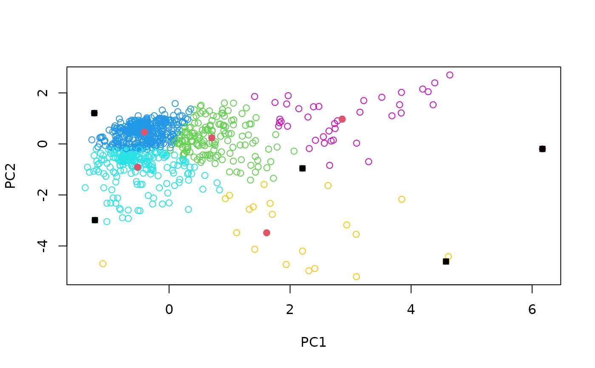

Perform a k-means sampling on a matrix for multivariate calibration
Arguments
- X
a numeric matrix (optionally a data frame that can be coerced to a numerical matrix).
- k
either the number of calibration samples to select or a set of cluster centres to initiate the k-means clustering.
- pc
optional. If not specified, k-means is run directly on the variable (Euclidean) space. Alternatively, a PCA is performed before k-means and
pcis the number of principal components kept. Ifpc < 1,the number of principal components kept corresponds to the number of components explaining at least (pc * 100) percent of the total variance.- iter.max
maximum number of iterations allowed for the k-means clustering. Default is
iter.max = 10(see?kmeans).- method
the method used for selecting calibration samples within each cluster: either samples closest to the cluster. centers (
method = 0, default), samples farthest away from the centre of the data (method = 1) or random selection (method = 2).- .center
logical value indicating whether the input matrix must be centered before Principal Component Analysis. Default set to
TRUE.- .scale
logical value indicating whether the input matrix must be scaled before Principal Component Analysis. Default set to
FALSE.
Value
a list with components:
'
model': numeric vector giving the row indices of the input data selected for calibration'
test': numeric vector giving the row indices of the remaining observations'
pc': if thepcargument is specified, a numeric matrix of the scaled pc scores'
cluster': integer vector indicating the cluster to which each point was assigned'
centers': a matrix of cluster centres
Details
K-means sampling is a simple procedure based on cluster analysis to select calibration samples from large multivariate datasets. The method can be described in three points (Naes et al.,2001):
Perform a PCA and decide how many principal component to keep,
Carry out a k-means clustering on the principal component scores and choose the number of resulting clusters to be equal to the number of desired calibration samples,
Select one sample from each cluster.
References
Naes, T., 1987. The design of calibration in near infra-red reflectance analysis by clustering. Journal of Chemometrics 1, 121-134.
Naes, T., Isaksson, T., Fearn, T., and Davies, T., 2002. A user friendly guide to multivariate calibration and classification. NIR Publications, Chichester, United Kingdom.
Author
Antoine Stevens & Leonardo Ramirez-Lopez
Examples
data(NIRsoil)
sel <- naes(NIRsoil$spc, k = 5, p = .99, method = 0)
# clusters
plot(sel$pc[, 1:2], col = sel$cluster + 2)
# points selected for calibration with method = 0
points(sel$pc[sel$model, 1:2],
col = 2,
pch = 19,
cex = 1
)
# pre-defined centers can also be provided
sel2 <- naes(NIRsoil$spc,
k = sel$centers,
p = .99, method = 1
)
# points selected for calibration with method = 1
points(sel$pc[sel2$model, 1:2],
col = 1,
pch = 15,
cex = 1
)
